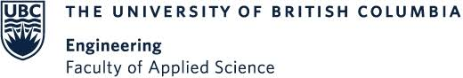

I’m Isaiah Persad, a Mechanical Engineering graduate from UBC Okanagan with a deep passion for engineering. I'm currently focused on engineering project coordination with long-term goals in space exploration, innovation-driven entrepreneurship, and building resilient infrastructure that make a difference. My academic path has taken me from the Okanagan to the University of Sydney and the University of Glasgow, shaping a global perspective rooted in curiosity, adaptability, and a drive to solve hard problems.
I’m passionate about solving complex problems through hands-on work, leadership, and strategic thinking. I enjoy building systems that are practical, scalable, and rooted in strong execution. I have experience with SolidWorks, MATLAB, Python, Bluebeam, Procore, and project documentation systems. I'm most in my element when combining technical thinking with real-world coordination, especially on projects that push boundaries or improve how people live and work.
At Traine Construction, I worked as a Project Coordinator on an $80M multi-family development, managing procurement, scheduling, contract workflows, and automating internal systems. I also interned at Mawson Rovers in Sydney, where I contributed to rover chassis sensor development and supported the transition of space technology into terrestrial applications across defense and infrastructure sectors.
Outside of engineering, I’m usually outdoors - surfing, hiking, skiing, golfing or out on the water. I’m always looking for new challenges that push me to grow, both as an engineer and as a person. In my free time, I'm building a two-way radio interface that can communicate with an AI language model—blending analog tech with cutting-edge AI for interactive, voice-driven exchanges. My next adventure takes me to Spain, where I plan to immerse myself in the culture, sharpen my Spanish, and build meaningful connections across languages and communities attending engineering conferences and networking events across Europe.
If you’re working on something that aligns with aerospace, or innovative infrastructure, I’d love to connect.

Capstone Project: Thermal-Controlled Formwork for Winter Concrete Pours
UBC Okanagan | Sponsored by Traine Construction & Development
Project Role: Project Lead & Mechanical Design Contributor
🛠️ What We Built
A modular, heated formwork blanket designed to maintain curing temperatures for concrete during winter construction. The system integrates with existing Peri gang formwork and uses resistive heating cable and insulative materials to meet CSA A23.1 standards—reducing cost, energy waste, and cold-weather delays.
🎯 Why We Built It
Traditional winter concrete curing methods—tarping, space heaters, or chemical additives—are costly, inefficient, or affect concrete quality. Our goal was to develop a simple, scalable, and cost-effective thermal solution that contractors would actually use on site.
🔄 How We Got There
Concept Development: Defined goals with Traine Construction and scoped design around real site constraints and budget.
Research: Assessed industry methods, conducted gap analysis, and explored material and electrical solutions.
Design Iteration: Used GRANTA for materials screening, modeled thermal performance, selected heating cable for efficiency and scalability.
Prototyping: Fabricated scaled-down prototype, tested insulation performance and temperature retention.
Final Design: Delivered a lightweight, modular blanket with polyester skin, polyurethane core, and embedded heating cable.
👤 My Role
I proposed the project and led its execution from day one—coordinating a six-person team, managing the budget and schedule, and acting as the main point of contact with our industry sponsor. I organized site integration, led procurement and logistics, and contributed directly to the mechanical and thermal design. From early concept sketches to prototype testing, I was involved in every major decision and ensured our solution delivered real value to real stakeholders.
🧠 Technical Highlights
Thermal modeling for ambient loss + hydration heat
Required heat output: 88 W/m²
GRANTA-driven material selection for R-value, durability, and cost
SolidWorks and FEA used for geometry + attachment design
Modular blanket units for scalable field deployment
🛰️ Related Project: Thermal Control Systems in Axiom HAB1
Before our Capstone, I worked on thermal regulation systems for a conceptual crewed habitat module—Axiom HAB1—during my semester abroad at the University of Sydney. The project explored heat management in orbit using passive insulation and active control strategies for internal crew comfort. It laid the foundation for my later work on applied thermal systems.
Working on this capstone project taught me a lot about what the design process actually looks like in practice—not just on paper. Iteration is not optional; it’s the norm. From concept to prototype, nearly every decision was revised or challenged, and that adaptability became one of our greatest strengths. I also learned the importance of scheduling and managing client expectations, especially when working with real industry partners. Balancing technical design with stakeholder communication required constant alignment and forward planning. Cross-disciplinary coordination was another key takeaway—blending electrical, mechanical, and logistical considerations meant stepping outside our individual roles and collaborating fluidly as a team.
Teamwork was everything. Whether it was testing insulation materials or organizing site visits, every success came from clear, open communication. No one could have done this project alone, and strong team dynamics were essential to solving problems efficiently and creatively.
This experience gave me a deeper understanding of the role of a professional engineer. It’s not just about technical skills—it’s about responsibility, safety, communication, and serving the public interest. Engineers shape the built environment, and we must do so with integrity, foresight, and humility.
Over my time in the School of Engineering, I’ve learned that I bring strengths in leadership, coordination, and big-picture problem solving. I’m energized by working with people, setting clear goals, and moving projects forward. That said, I recognize that my technical depth—particularly in simulation and advanced design—needs continued growth. I plan to address this through personal projects, hands-on learning, and actively seeking out challenges that push me out of my comfort zone.
I’ve also realized how critical it is to surround yourself with good teammates. The right team—with shared vision and trust—makes all the difference in engineering, and I intend to seek out and help build those teams throughout my career.